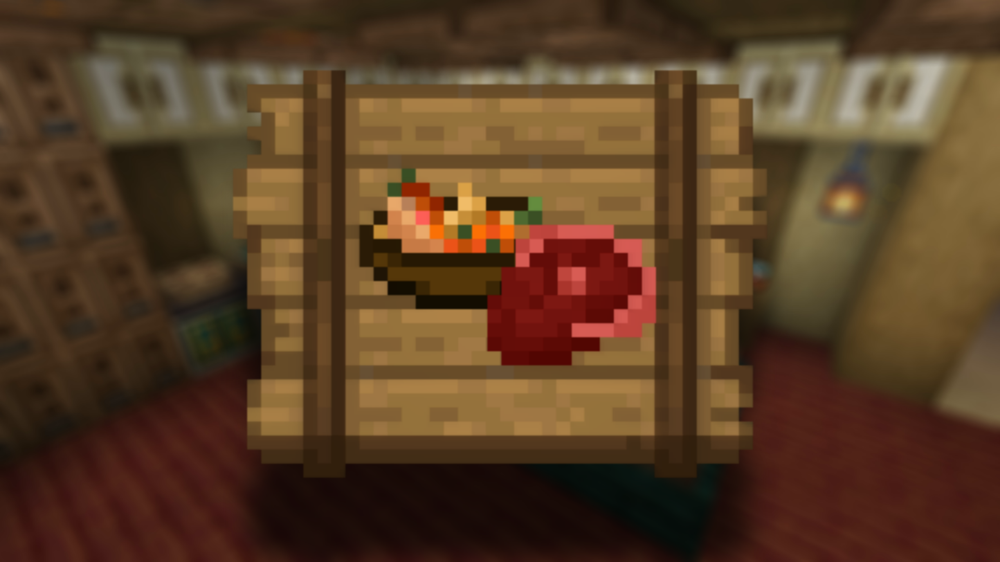

<!DOCTYPE html>
<html lang="en">
<head>
  <link rel="icon" href="../../img/themes/active/favicon.png">
  <title>Q&A #0| Ice and Fire Delight | Project | Donne431</title>
  <meta name="viewport" content="width=device-width, initial-scale=1, maximum-scale=1" />
  <meta name="title" content="Q&A #0| Ice and Fire Delight | Project | Donne431">
  <meta name="description" content="Welcome to my website! I am Donne431, just a guy, who love made a modifications for games. I'm 16 years old, and I'm from Crimea, Russia (demi-island washed by the Black and Azov Sea). I also like to create almost any content for Minecraft, that is: mods, maps, resource packs, servers.">
  <meta name="keywords" content="Minecraft, Forts, Mods, Resourcepacks, Datapacks, Donne431">
  <meta name="theme-color" content="#4bb4f1">


  <script src="https://code.jquery.com/jquery-3.3.1.min.js"></script>
  <script src="https://cdn.jsdelivr.net/npm/handlebars@latest/dist/handlebars.js"></script>
  <script src="https://mcapi.us/scripts/minecraft.min.js"></script>
  <script src="../../../js/main.js"></script>
  <script src="../../../config.js"></script>
  <script src="../../../js/lightbox.min.js"></script>

  <script>tosAgreed = true</script>

  <link rel="stylesheet" href="https://cdnjs.cloudflare.com/ajax/libs/font-awesome/6.7.1/css/all.min.css"/>
  <link rel="stylesheet" href="../../../css/style.css">
  <link rel="stylesheet" href="../../../config.css">
  <link href="../../../css/lightbox.css" rel="stylesheet" media="all">

</head>


<body>

  <div id="target"></div>

  <script id="template" type="text/x-handlebars-template">

  <header>
    <div class="hero" id="hero">
      <a><h1 style="padding-top: 3%;"></h1></a>
    <p> </p>
    <div class="news-card" align="center">
      <a href="../../" class="btn"><i class="fa-solid fa-house"></i> Home</a>
      <a href="../../wiki" class="btn"><i class="fa-solid fa-book"></i> Wiki</a>
      <a href="#links" class="btn"><i class="fa-solid fa-share"></i> Links</a>
    </div>
    <p> </p>
    </div>
  </header>

  <section class="dark" id="projects">
    <h1><i class="fa-solid fa-list-ul"></i> Project</h1>
    <div id="news">
    <div class="news-card">
      <p align="center" style="color:#fff">
        <a>Mod</a>
        <strong></strong>
        <a href="../../../img/projects/ice_and_fire_delight/banner.png" data-lightbox="roadtrip"></a>
      </p>
    </div>
    <p> </p>
    <div class="news-card">
      <p>
      <a href="../../../projects/ice_and_fire_delight/index.html" class="btn"><i class="fa-solid fa-book-open"></i> Description</a>
      <a href="../../../projects/ice_and_fire_delight/QaA.html" class="btn"><i class="fa-solid fa-book-open"></i> Q&A</a>
      <a href="../../../projects/ice_and_fire_delight/compatible-mods.html" class="btn"><i class="fa-solid fa-list-ul"></i> Compatible mods</a>
      <a href="../../../projects/ice_and_fire_delight/incompatible-mods.html" class="btn"><i class="fa-solid fa-list-ul"></i> Incompatible mods</a>
      <a href="../../../projects/ice_and_fire_delight/changelog.html" class="btn"><i class="fa-solid fa-bars-staggered"></i> Changelog</a>
      <a href="../../../projects/ice_and_fire_delight/spoilers.html" class="btn"><i class="fa-solid fa-bars-staggered"></i> Spoilers</a>
      <a href="../../../projects/ice_and_fire_delight/download.html" class="btn"><i class="fa-solid fa-download"></i> Download</a>
      </p>
    </div>
    <p> </p>
    <div class="news-card-left">
    <p id="Q&A#0" class="news-card">Questions and Answers #0</p>
    <div>
        <p>
            Question #1: <br> <br> <!-- Когда выйдет следующее обновление?-->
                Answer #1: <br> <br> <br> <!-- Точной даты на данный момент нет, но планируется, чтобы оно будет выпущено до середины следующего месяца.-->
                
            Question #2: <br> <br> <!-- Я хочу начать переводить ваш мод, как мне это сделать?-->
                Answer #2: <br> <!-- Вы можете просто написать мне в личку дискорд (Вот кстати он - donne431)-->
                
            Question #3: <br> <br> <!-- У меня есть вопрос для вас, где я могу его спросить?-->
                Answer #3: <br> <!-- Справа на странице, вы можете заметить значок дискорд, там находится специальный сервер, где вы можете задать свой вопрос!-->
                
            Question #4: <br> <br> <!-- Можете ли вы рассказать, какие у вас планы на мод?-->
                Answer #4: <br> <!-- Если говорить о долгосрочных планах, то их у меня много, к примеру, я планирую добавить больше еды, которую можно ставить на землю, также хотелось бы добавить больше различных конфигураций, чтобы можно было свободно изменять параметры мода (к примеру как в IaF), полная переработка кода (в следствие чего и уменьшение размера мода), новые доски для нарезки (это мечта художника мода), максимальное балансирование еды, полная переработка кулинарной книги (возможно даже смена мода библиотеки), добавление большего кол-во интеграций с другими модами (к примеру Create), увеличение частоты выхода обновлений (опционально), выход обзора на мод (желательно от меня), выход трейлера мода (опять же желательно от меня), вообще есть ещё много планов, правда сейчас я вот так не вспомню. <br> А вот если говорить о кратковременных планах, то тут уже в разы легче реализуемое, во первых это добавление новых записей в книгу, далее могу сказать о переработке эффектов, новых ножах, новой еде, исправлениях багов, недочётов, большего пока сказать не могу, хотя думаю я уже и так выдал лишнего.-->
                
            Question #5: <br> <br> <!-- Где ты живёшь?-->
                Answer #5: <br> <!-- Хах, свой точный адрес я конечно скинуть не могу, но скажу так: Я проживаю в Российской Федерации, в Республике Крым.-->

            Question #6: <br> <br> <!-- Сколько ты зарабатываешь с мода?-->
                Answer #6: <br> <!-- По сути не много, до 15$ в месяц, кстати прикол в том, что мой доход постоянно растёт, то есть даже месяц назад он был меньше: 10, 7 и 2 $, причём это не 3 рандомных месяца, а 3 предыдущих. Правда проблема в том, что из-за того, что я живу в РФ, я не могу вывести эти деньги, то есть они по сути просто фантики для меня, по крайней мере на данный момент.-->
                
            Question #5: <br> <br> <!-- Сколько тебе лет?-->
                Answer #5: <br> <!-- На данный момент, мне 16 лет.-->

            Question #5: <br> <br> <!-- -->
                Answer #5: <br> <!-- -->
        </p>
    </div>
    </div>
    <p> </p>
  </section>
  <section class="dark">
    <div class="news-card" align="center">
    <a href="../../../projects" class="btn2"><i class="fa-solid fa-arrow-left"></i> Back to Projects</a>
    </div>
  </section>

  <section class="light">
    <h1><i class="fa-solid fa-share"></i> Links</h1>
    <div id="links" align="center">
      <a href="https://discord.gg/NQBhQRDEhF"></a>
      <a href="https://www.curseforge.com/members/donne431/projects"></a>
      <a href="https://modrinth.com/user/Donne431"></a>
      <a href="https://github.com/Donne431"></a>
      <a href="https://www.donationalerts.com/r/donne431"></a>
    </div>
  </section>


  <footer>
    <a>&copy; {{server_port}} {{server_name}}. All Rights Reserved.</br>{{server_name}} is not affiliated with or endorsed by Mojang Studios or Microsoft<br>{{server_ip}}</a>
    <a></a>
    
  </footer>
  </script>
  <script src="../../../js/license.js"></script>

</body>
</html>
